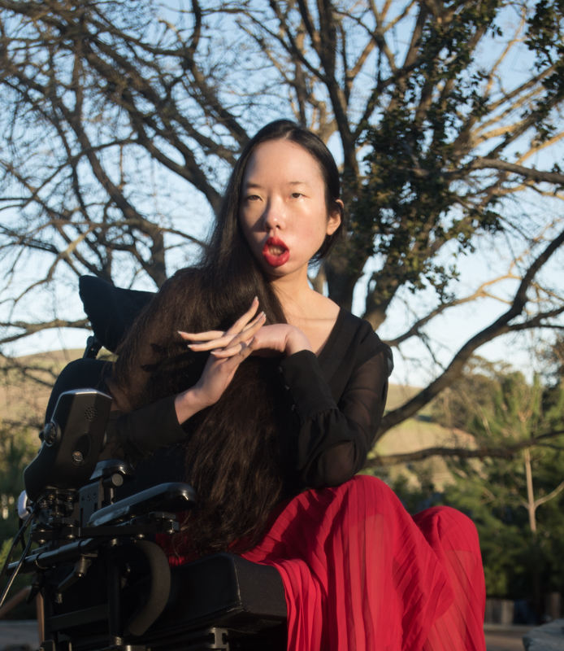
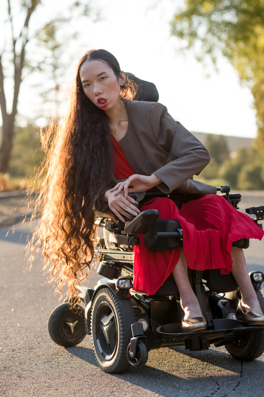
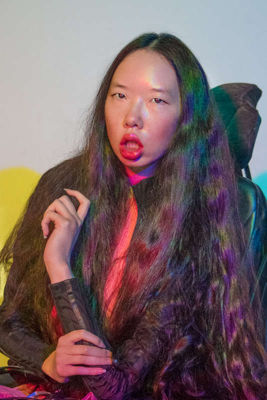

Aubrie Lee
photos
Alt text: A Chinese American woman folds her hands and looks straight at the camera. She's riding a power wheelchair and wearing a black blouse and red pleated skirt. Behind her, oak tree branches twist like Medusa's tentacles.
Alt text: A Chinese American woman in a power wheelchair folds her hands and looks sidelong at the camera. Her lips and dress are red, and gold glitters from her jewelry and the sunset light that soaks through her cascading hair.
Alt text: A Chinese American woman in a power wheelchair looks at the camera. She holds up her left hand with her right, and her fingers curl in the air. She's illuminated by magenta, yellow, and cyan spotlights, which create rainbows on her skin and in her cascading hair.
bio
abridged
Aubrie Lee is an artist with an engineering degree from Stanford University. She's currently a brand manager at Google and the President of Google's Disability Alliance employee resource group. As a multiply Disabled activist, she gives talks at Fortune 500 companies and events like the United Nations' High Level Political Forum, and her work has been featured on the Disability Visibility Project, Rooted in Rights, and Yahoo News. Two of her passions are 3D modeling, so that she can illustrate anything she can imagine, and fashion modeling, to challenge how society treats Disability and beauty as opposites. Learn more about her at aubrielee.com.
full
Aubrie Lee is an artist with an engineering degree from Stanford University. She finds purpose in imagining the future (the art) and then making it real (the engineering). At Stanford, she co-founded Stanford's Disabled student group. She also became a member of the honor societies Phi Beta Kappa and Tau Beta Pi.
Aubrie is currently a brand manager at Google and the President of Google's Disability Alliance employee resource group. She is the honoree of the 15th annual ADCOLOR Change Agent award for enhancing corporate culture and creating a more inclusive environment.
Aubrie is multiply Disabled and advocates for Disability justice at Google, in tech, and in the world. She gives talks at Fortune 500 companies and events like the United Nations' High Level Political Forum, and her activism has been featured on the Disability Visibility Project, Rooted in Rights, and Yahoo News.
Two of Aubrie's passions are 3D modeling, so that she can illustrate anything she can imagine, and fashion modeling, to challenge how society treats Disability and beauty as opposites. Learn more about her at aubrielee.com.